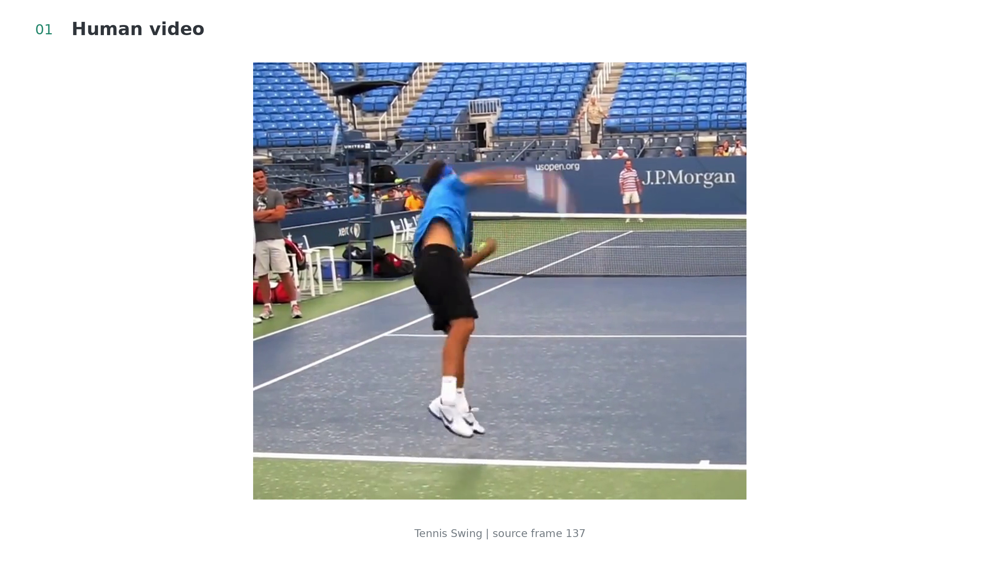
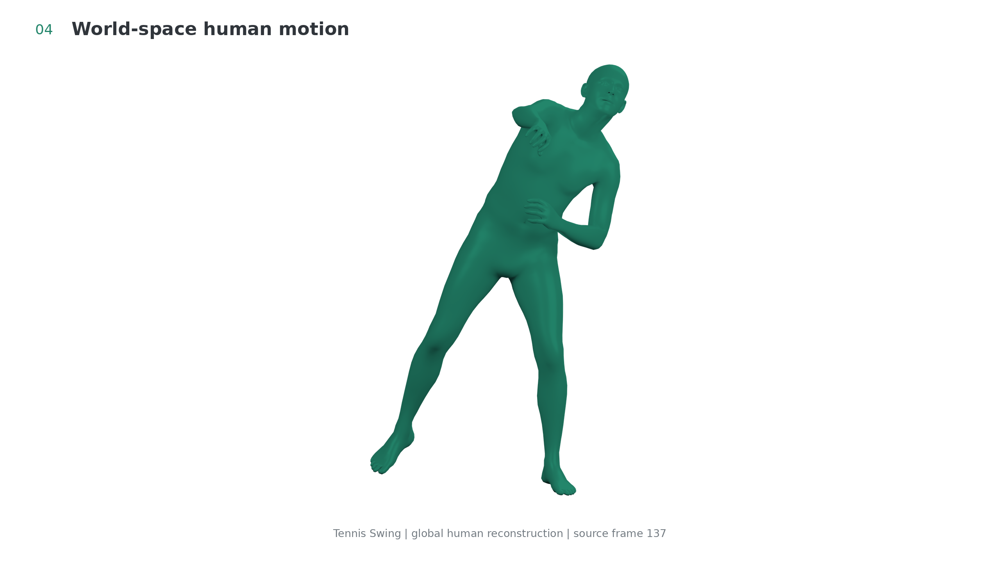
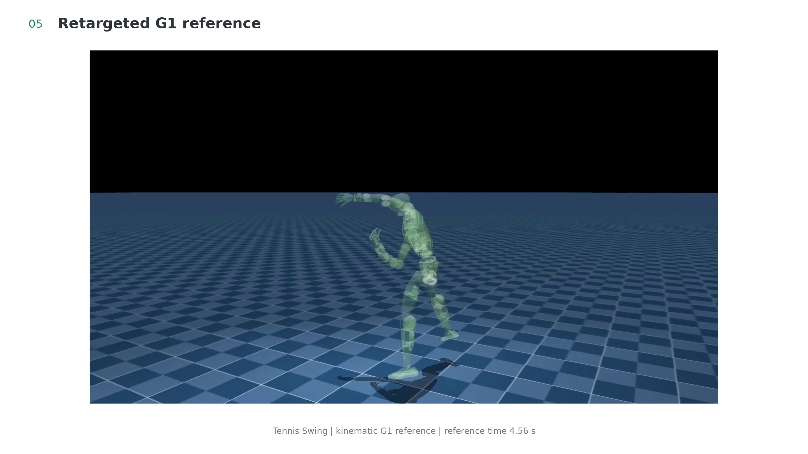
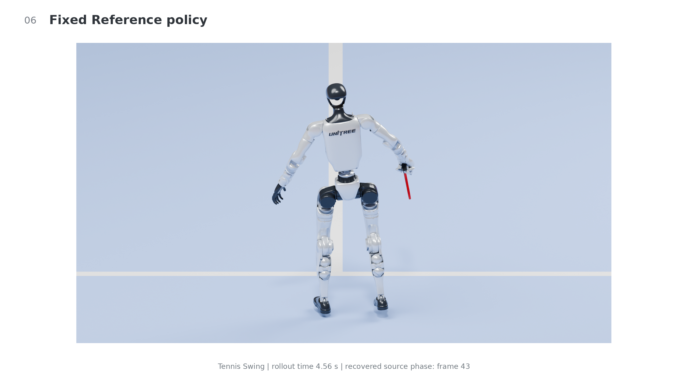
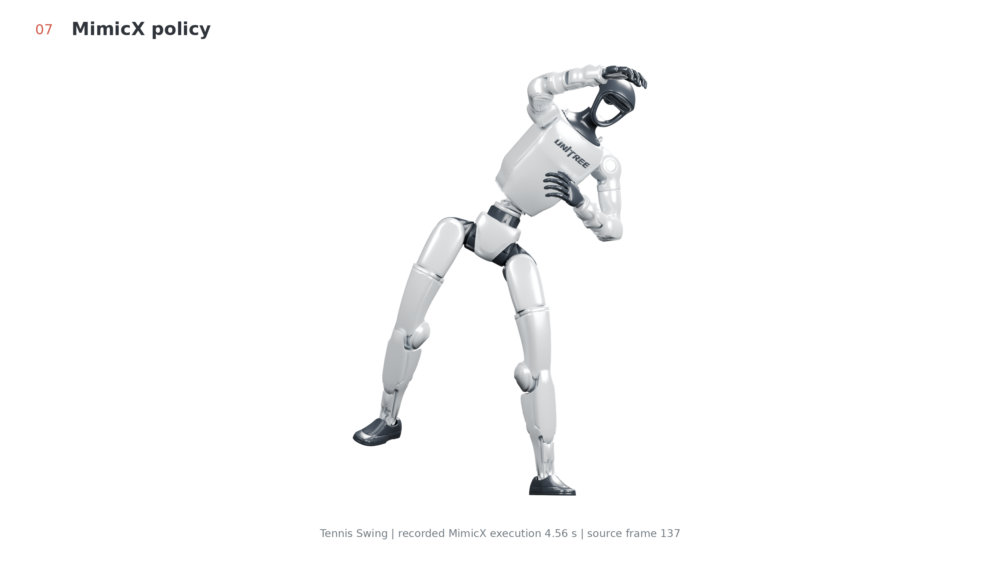
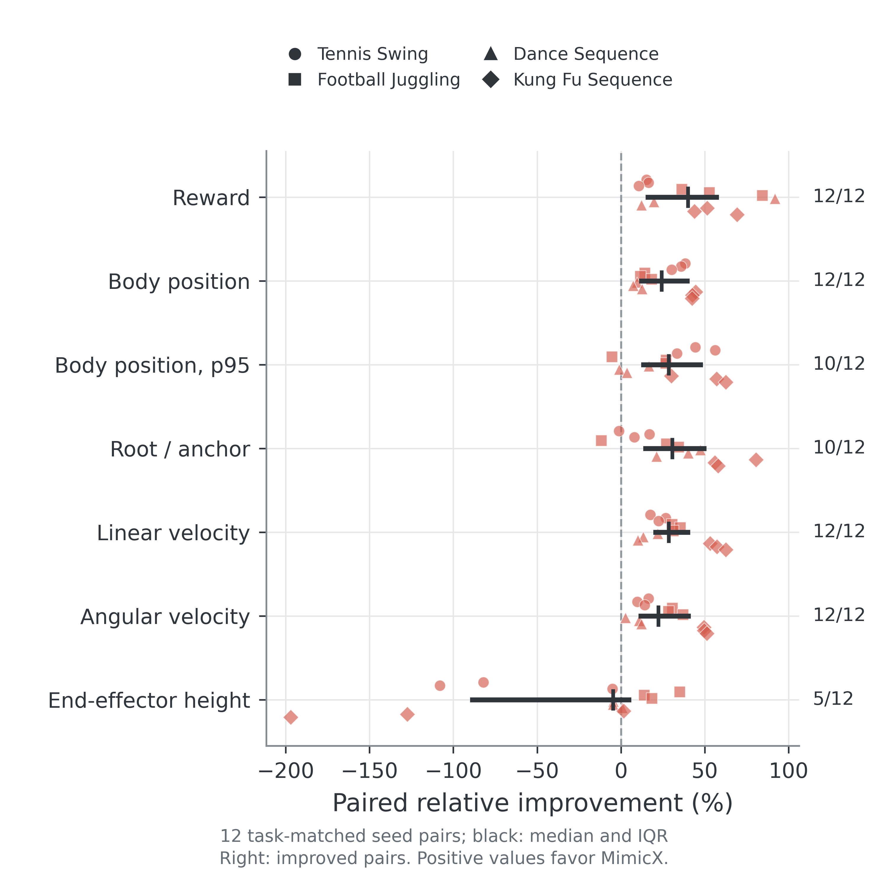

Locate the failure.
Strict rollouts expose difficult time windows and body-error channels. The diagnosis routes attention to task-critical body regions.
Policy-in-the-Loop Supervision Refinement
for Video-Driven Humanoid Motion Tracking
From human videos to executable robot motion
MimicX turns video-derived human motion into humanoid tracking policies, then uses policy rollouts to improve training supervision. Failure diagnosis identifies when tracking breaks, where the error concentrates, and which training objectives and curricula to refine.
Fixed Reference to MimicX in the four-task continuation study. Body error is a temporal mean of aligned worst-body distance; horizon is the worst first-failure step across verification repeats.
Policy-in-the-loop supervision refinement





Strict rollouts expose difficult time windows and body-error channels. The diagnosis routes attention to task-critical body regions.
Bounded candidates combine local, global and dynamics objectives with failure-window replay. Each continues from the same current policy.
Repeated rollouts rank completion, failure horizon and tracking fidelity before reward. Candidates that fail verification leave the current policy intact.
GVHMR and SMPL-X reconstruct the human; GMR retargets the motion; PPO learns tracking in MuJoCo/MjLab. Input preparation establishes the registered reference, which stays fixed within an AutoRefine loop.
Recorded policy execution
Tennis: MimicX reaches strict success in all nine core evaluation rollouts. Videos illustrate a selected recorded trial.
Solid geometry is the executed robot; transparent geometry is the reference. The hero uses the recorded policy in a presentation scene; props and scene appearance are not ball-contact training evidence.
Controlled continuation study
Four tasks, four methods, three continuation seeds and three verification repeats: 48 method-task-seed trials and 144 final evaluation rollouts. The table retains every core task.
| Task | Method | Strict success | Execution horizon | Body error |
|---|---|---|---|---|
| Tennis Swing | Fixed Reference | 11.1% | 322.0 | 0.241 m |
| Tennis Swing | MimicX | 100.0% | 801.0 | 0.157 m |
| Football Juggling | Fixed Reference | 0.0% | 53.7 | 0.286 m |
| Football Juggling | MimicX | 0.0% | 427.3 | 0.244 m |
| Dance Sequence | Fixed Reference | 0.0% | 193.3 | 0.270 m |
| Dance Sequence | MimicX | 0.0% | 341.3 | 0.244 m |
| Kung Fu Sequence | Fixed Reference | 0.0% | 97.7 | 0.249 m |
| Kung Fu Sequence | MimicX | 0.0% | 196.0 | 0.141 m |
Success uses the full evaluation budget. An unfailed rollout uses H + 1 as its horizon sentinel. Trials share a task-specific warmstart; protected Dance/Kung Fu outputs retain that checkpoint. Full component results and metric definitions are included below.

MimicX-HLoop
GPU rollout jobs feed CPU diagnosis and final report selection. Dependency-ready execution overlaps independent work without changing the frozen policies, inputs or evaluation budget.
| Executor | Median time | Speedup vs sequential |
|---|---|---|
| Sequential | 241.221 s | 1.000× |
| Bulk-synchronous | 122.258 s | 1.973× |
| MimicX-HLoop | 124.017 s | 1.945× |
All modes have matching report selections. This workload performs zero PPO updates; timing measures execution efficiency, not policy convergence.
Code and reproducibility
The source contains the training/refinement code, pinned backend setup and paper configurations. Exact checkpoint/input artifacts are verified separately; see the reproduction inventory for availability.
{kind=link}